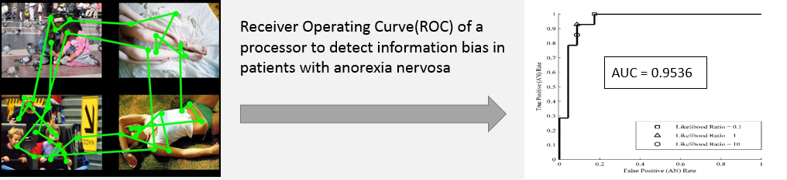
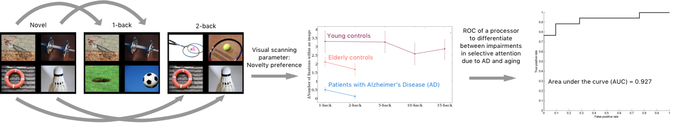

Biases in visual scanning patterns and neuropsychiatric disorders
Biases in visual scanning patterns often bypass the volitional component of self report measures and can be used as an objective physiological marker for cognitive biases in information processing of patients. We are developing methods to detect biases in information processing in patients with eating disorders, mood disorders and Alzheimer's disease. 
Biases in visual scanning patterns and cognition
Impairments in selective attention, the ability to focus on a relevant stimulus while filtering out distractions, are observed in patients with mild cognitive impairment, mild Alzheimer disease and patients with post concussion syndrome. We are developing novel eye-movement paradigms to detect impairments in selective attention and other domains of cognition. 